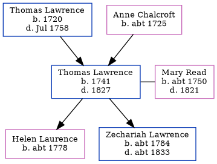

Thomas Lawrence 1741 - 1827
[ Home ] | [ Calendar ] | [ Surnames Index ] | [ Census Index ] | [ Family History ]The child of Thomas Lawrence and Anne Chalcroft, Thomas Lawrence, the 4 times great-grandfather of Nigel Horne, was born in Ash, Kent, England in 17411 and married Mary Read (with whom he had 2 children: Helen and Zechariah) in Elmstone, Kent, England on Jun 24, 17703 (IGI). In 1770, he was living in Elmstone4.
He died in 1827 in Ash1,2 and was buried there at St Nicholas Church on May 31, 18272.
Parents
- Thomas was born in 1720
- Anne was born c. 1725
Children
- Helen was born c. 1778
- Zechariah was born c. 1784
Citations
- Kent Burials - Findmypast
- England, Select Deaths and Burials, 1538-1991 Ancestry.com Operations, Inc.
- England, Select Marriages, 1538–1973 Ancestry.com Operations, Inc.
- England, Select Marriages, 1538–1973 Ancestry.com Operations, Inc.
Media
Kent Burials - GBPRS/D/407068817/1
Family Tree
Generated by ged2site. Last updated on Jun 11, 2024